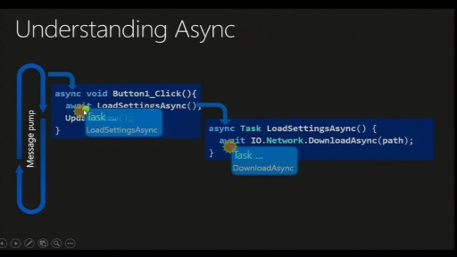
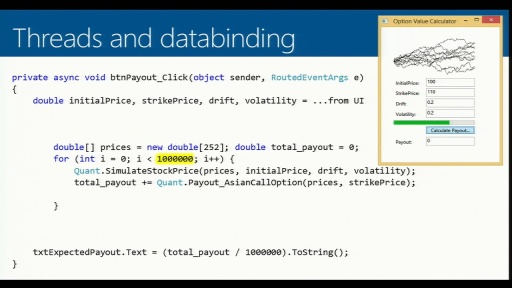
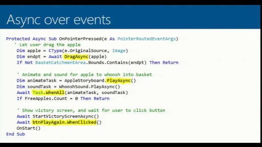
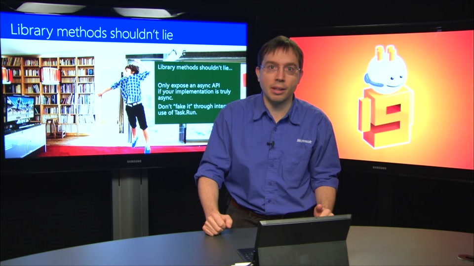
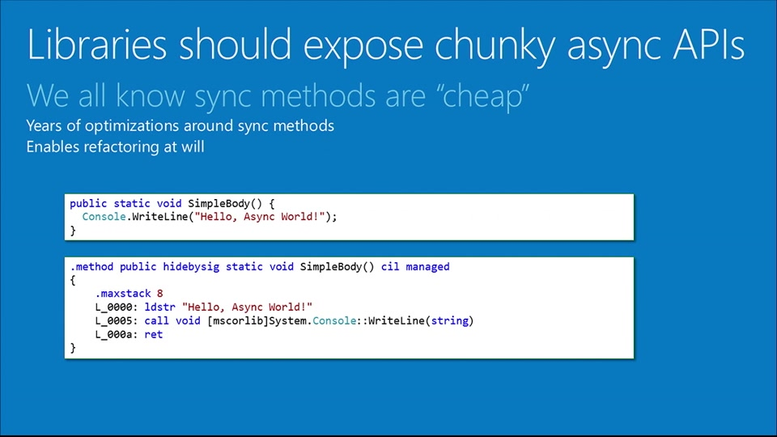
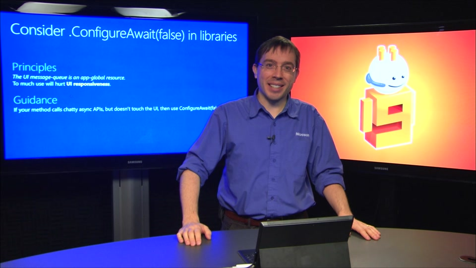

Async involves some new concepts. They're not difficult; just unfamiliar. Over the past year Lucian Wischik has been watching how people use Async in C# and VB. This series distils out the six essenti…
Six Essential Tips For Async - Introduction[MP4] [2013/03/12]Async involves some new concepts. They're not difficult; just unfamiliar. Over the past year Lucian Wischik has been watching how people use async/await in C# and VB. This series distils out the three…
Tip 1: Async void is for top-level event-handlers only [MP4] [2013/03/12]Async Tip #1: Async void is for top-level event-handlers only, and event-like things. Don't use it elsewhere in your code. Slides are available on Lucian's blog. Async void is a "fire-and-forget&…
Tip 2: Distinguish CPU-Bound work from IO-bound work[MP4] [2013/03/12]Async Tip #2: It's crucial to distinguish CPU-bound work (should be done on threadpool) from IO-bound work (which needn't). You can download slides for this talk from Lucian's blog. I remember reading…
Tip 3: Wrap events up in Task-returning APIs and await them[MP4] [2013/03/12]Async Tip #3: You can wrap events up in Task-returning APIs and await them. This can dramatically simplify code. Slides and source code are available on Lucian's blog. This video introduces a new patt…
Tip 4: Async Library Methods Shouldn't Lie[MP4] [2014/02/07]Libraries shouldn't lie. That's not why they're called "lie-braries"... The threadpool is an app-global resource, so you should leave the callers of your library to decide how and when they …
Tip 5: Async libraries APIs should be chunky[MP4] [2014/02/07]5. Libraries should have chunky async APIs. But if you can't achieve that, there's a micro-optimization you can use for async methods based around the fast-path which can reduce or eliminate the heap …
Tip 6: Async library methods should consider using Task.ConfigureAwait(false)[MP4] [2014/02/08]6. Libraries should consider Task.ConfigureAwait(false). This is another micro-optimization you can use to reduce your methods' impact on the UI thread. Consider this if your library routine might be …